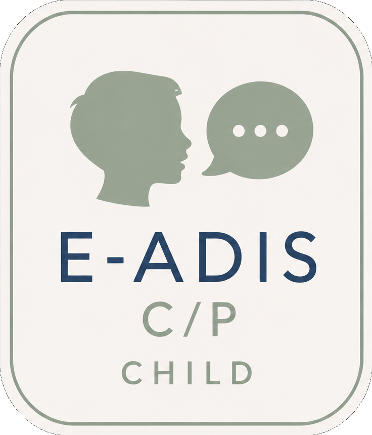
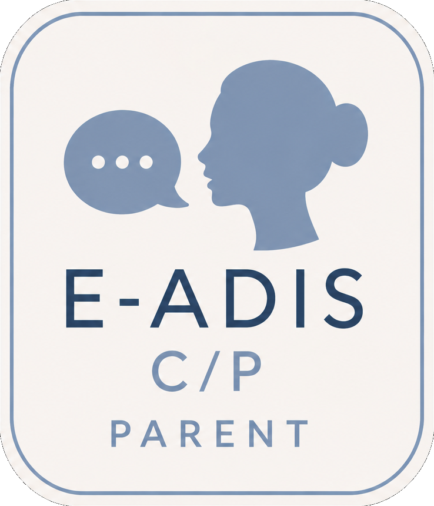

macOS — first launch
- Open the
.dmgand drag E-ADIS C-P into Applications. - The app isn't notarized yet, so on first launch right-click the app → Open → Open (a normal double-click will be blocked by Gatekeeper).
- If macOS still refuses, run this once in Terminal:
xattr -dr com.apple.quarantine "/Applications/E-ADIS C-P.app"then open the app normally.
Windows — first launch
- Run E-ADIS-C-P-Setup-1.0.0.exe. The app installs and launches automatically.
- SmartScreen may show "Windows protected your PC" because the installer isn't code-signed yet — click More info → Run anyway.
About
E-ADIS C/P administers the full ADIS-5 Child and Parent interviews with automated DSM-5 criteria tracking, session autosave, and one-click PDF reports of the complete interview with a diagnostic summary. Sessions are stored locally — nothing is sent to any server.

